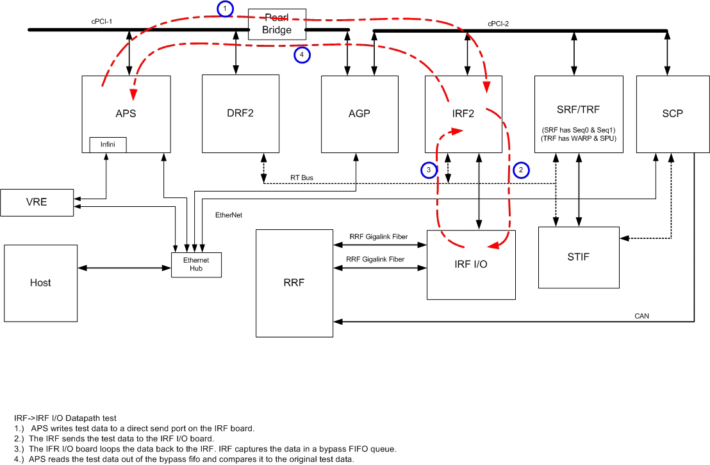

Proprietary to General Electric
Direction 5500113, Rev# 3
Discovery MR450 1.5T Service Methods
Module Version 1.0, Version Date 4/26/07
Proprietary to General Electric |
Diagnostics >> MGD Chassis >> MGD Data Paths
Tests data path between the IRF Board and the IRF I/O (rear MGD).
IRF Board
IRF I/O board
APS to IRF communication
Minimum Configuration
MGD Chassis
Bridge Board
IRF board
IRF I/O board
APS board
Illustration 1: IRF Board through the IRF I/O to the AGP Block Diagram

The test executes in these steps:
The AGP writes test data to a direct send port on the IRF Board.
The IRF sends the test data to the IRF I/O board.
The IRF I/O Board loops the data back to the IRF. The IRF captures the data in a bypass FIFO queue.
The AGP reads the test data out of the bypass FIFO and compares it to the original test data.
Output values are judged pass or fail. In the event of failure, the details of the failure can be found in the GE System Log.
Although, in the case of errors you can click the 1st Error number to see the nature of the error, it is recommended that you view the GE System Log to view all the errors that were recorded.
Click [Calculate Time] to get an estimate of the time it will take to run the selected diagnostics.
| NOTE: | Other than Test Iterations, the Test Options settings should not be changed from their default settings unless instructed to do so by a GE Healthcare engineer. There are very few circumstances when these settings ever need to be changed. |
None
AGP Help Page:/csd/mr_csd/serviceDesktop/docs/cclass/agp_board/agp_board.htm
IRF Help Page:/csd/mr_csd/serviceDesktop/docs/cclass/irf_board/irf_board.htm
IRF I/O Help Page:/csd/mr_csd/serviceDesktop/docs/cclass/irf_io_board/irf_io_board.htm